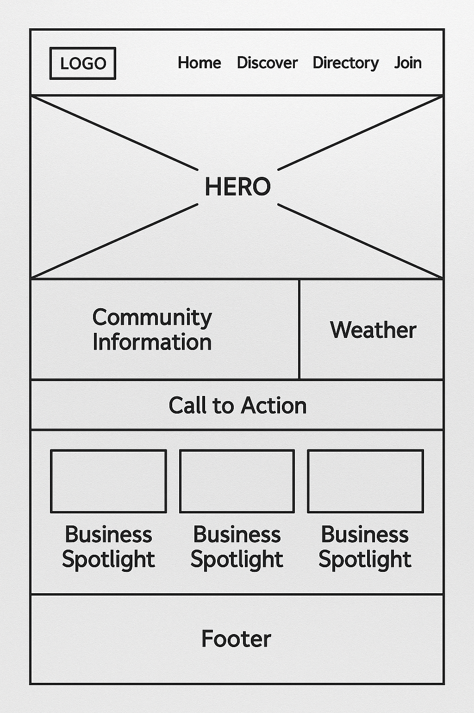
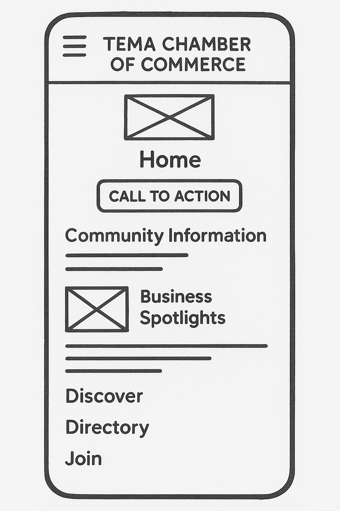

Site Name
Tema Chamber of Commerce Site Plan
This name was selected because it reflects the geographic location—Tema, a key industrial city in Ghana—and includes the word "Chamber" to indicate the focus on business networking and development. It establishes clear relevance and authority within the region.
Site Purpose
This website will serve as a resource hub for businesses in the city of Tema. The site will provide information on local events, host networking opportunities, create business directories, and encourage local shopping. It aims to promote local economic growth, support local businesses, and foster a sense of community between the businesses.
Target Market
Business owners and patrons in the city of Tema and surrounding areas, including Accra and the Greater Accra Region.
Site Goals
- Improve member engagement by providing valuable resources and networking opportunities.
- Attract new businesses and encourage economic development in the Tema community.
- Improve the visibility and reputation of the chamber as a trusted authority in local business matters.
- Promote local businesses through a comprehensive member directory and spotlight features.
User Personas
Small Business Owner: Ama
Ama is a 32-year-old entrepreneur who owns a local restaurant in Tema Community 1. She is looking for networking opportunities, business resources, and marketing support to help grow her business and attract more customers.
Corporate Executive: Kwame
Kwame is a 45-year-old executive at a shipping company in Tema Port. His company is interested in partnership opportunities, economic development resources, and networking with other business leaders in the industrial area.
The New Resident: Sarah
Sarah recently moved to Tema from Kumasi and is looking to learn more about services available in the area. She is interested in finding business directories, event calendars, and community service opportunities.
Scenarios
- A local business owner is interested in joining the chamber of commerce to network with other business owners. They visit the website to find information on membership benefits, fees, and how to apply.
- A community member is looking for upcoming events and workshops hosted by the chamber. They visit the website to browse the events calendar and register for interesting activities.
- A visitor from out of town is considering relocating their business to Tema and wants to learn more about the local business environment. They explore the chamber's website for information on existing businesses, availability of skilled labor, and quality of life in the area.
- An entrepreneur wants to find contact information for specific types of businesses (e.g., suppliers, contractors) in Tema and uses the member directory to search and connect.
SEO Plan
- Use relevant keywords in site descriptions, content, and blog posts (e.g., "Tema businesses", "Ghana chamber of commerce", "Tema networking").
- Verify the site on Google's Business Profile.
- Get inbound links or backlinks from all member businesses to improve rankings.
- Embed Google Analytics in all site pages to track visitor behavior and optimize content.
- Optimize images with descriptive alt text and proper file names.
- Create a sitemap.xml and submit to Google Search Console.
Design Brief
Color Schema
- Primary Color: #004b87 (Dark Blue) - Used for headers, footer background, and buttons to convey professionalism and trust.
- Secondary Color: #006bb3 (Medium Blue) - Used for hover states and secondary buttons.
- Accent Color: #f2c94c (Gold) - Used for highlights, icons, and call-to-action elements to give a vibrant and energetic touch.
- Background Color: #ffffff (White) - Clean background for readability.
- Text Color: #333333 (Dark Gray) - Primary text color for optimal readability.
Typography
- Font Family: Poppins (Google Font)
- Headings: Poppins Bold (700) - Used for h1, h2, h3
- Body Text: Poppins Regular (400) - Used for paragraphs and general content
- Navigation: Poppins Medium (500) - Used for menu items
Site Map
Main Navigation Structure:
- Home - Landing page with hero image, weather, spotlights, and call-to-action
- Discover - Community information, image gallery, visitor tracking
- Directory - Member business directory with grid/list views
- Join - Membership application form with different membership levels
Additional Pages:
- Thank You page (after form submission)
Wireframe - Desktop
This is a basic wireframe mockup to visualize the layout of the homepage for the Tema Chamber of Commerce website on a desktop.
Wireframe - Mobile
This is a basic wireframe mockup to visualize the layout of the homepage for the Tema Chamber of Commerce website on a mobile device.
